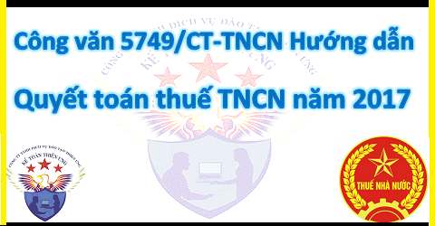

Công văn 5749/CT-TNCN ngày 5/2/2018 của Cục thuế Thành phố Hà Nội hướng dẫn về việc quyết toán thuế TNCN năm 2017 và cấp MST người phụ thuộc.
|
TỔNG CỤC THUẾ
CỤC THUẾ TP HÀ NỘI
|
CỘNG HÒA XÃ HỘI CHỦ NGHĨA VIỆT NAM Độc lập - Tự do - Hạnh phúc |
| ------- | --------------- |
|
Số: 5749/CT-TNCN V/v quyết toán thuế TNCN năm 2017 và cấp MST NPT |
Hà Nội, ngày 05 tháng 02 năm 2018 |
| Kính gửi: |
- Các cơ quan, đơn vị hành chính, sự nghiệp, đoàn thể; - Các doanh nghiệp, tổ chức kinh tế. - Cá nhân có thu nhập chịu thuế TNCN từ tiền lương tiền công |
Thi hành Luật Thuế thu nhập cá nhân (TNCN), Luật Quản lý thuế và các văn bản hướng dẫn thi hành;
Căn cứ Thông tư số 111/2013/TT-BTC ngày 15/8/2013, Thông tư số 156/2013/TT-BTC ngày 06/11/2013, Thông tư số 119/2014/TT-BTC ngày 25/8/2014; Thông tư số 128/TT-BTC ngày 05/9/2014, Thông tư số 92/2015/TT-BTC ngày 15/6/2015 của Bộ Tài chính và các văn bản hướng dẫn thi hành;
1. Giải thích từ ngữ
- HTKK: Là phần mềm của TCT cung cấp cho NNT, nhằm hỗ trợ nhập dữ liệu kê khai thuế và in tờ khai quyết toán có mã vạch, kết xuất file dữ liệu theo định dạng chuẩn cho các loại thuế, trong đó có thuế TNCN.
- iHTKK: Là phần mềm của TCT cung cấp nhằm hỗ trợ NNT là Doanh nghiệp, tổ chức có sử dụng chữ ký số nộp hồ sơ khai thuế (trong đó bao gồm các tờ khai quyết toán thuế, TNCN) qua mạng mà không cần gửi tờ khai giấy;
- eTax: Là hệ thống dịch vụ thuế điện tử sẽ dần thay thế hệ thống iHTKK nhằm hỗ trợ NNT là doanh nghiệp, tổ chức có chữ ký số; tổ chức, cá nhân không sử dụng chữ ký số. Đối với NNT có sử dụng chữ ký số nộp hồ sơ khai thuế qua mạng thì không cần gửi hồ sơ giấy.
- Phần mềm Kế toán, Quản lý nhân sự (gọi tắt là QLNS): Là các ứng dụng phần mềm kế toán, nhân sự, tiền lương, hoặc các phần mềm hỗ trợ kê khai khác mà các CQCT đang sử dụng và có các tính năng kết xuất thông tin quyết toán thuế TNCN ra các tệp dữ liệu điện tử theo định dạng chuẩn của CQT và hỗ trợ chức năng in các tờ khai quyết toán thuế TNCN và bảng kê.
2. Từ viết tắt
- TCT: Tổng cục thuế
- CQT: Cơ quan thuế
- ĐKT: Đăng ký thuế
- QTT: Quyết toán thuế
- MST: Mã số thuế
- NNT: Người nộp thuế
- NPT: Người phụ thuộc
- TNCN: Thu nhập cá nhân
- TCTTN: Tổ chức, cá nhân chi trả thu nhập
Để đảm bảo thực hiện thống nhất theo quy định của pháp luật, Cục Thuế TP Hà Nội hướng dẫn những nội dung lưu ý khi thực hiện quyết toán thuế TNCN năm 2017, cấp MST cho NPT đối với các cơ quan, đơn vị, đoàn thể, doanh nghiệp, tổ chức kinh tế, cá nhân trả thu nhập, sau đây gọi chung là tổ chức trả thu nhập và cá nhân QTT TNCN như sau:
I. ĐỐI TƯỢNG PHẢI QUYẾT TOÁN THUẾ TNCN
Cá nhân cư trú chỉ phải thực hiện quyết toán thuế TNCN đối với thu nhập chịu thuế từ tiền lương, tiền công.
1. Cá nhân có thu nhập chịu thuế từ tiền lương, tiền công phải thực hiện quyết toán thuế TNCN
- Cá nhân cư trú có thu nhập từ tiền lương, tiền công có trách nhiệm khai quyết toán thuế nếu có số thuế phải nộp thêm.
- Cá nhân có số thuế nộp thừa có nhu cầu đề nghị hoàn hoặc bù trừ vào kỳ khai thuế tiếp theo.
- Cá nhân cư trú có thu nhập từ tiền lương, tiền công thuộc diện xét giảm thuế do thiên tai, hỏa hoạn, tai nạn, bệnh hiểm nghèo.
- Cá nhân cư trú là người nước ngoài kết thúc hợp đồng làm việc tại Việt Nam phải khai quyết toán thuế với cơ quan thuế trước khi xuất cảnh.
Lưu ý: Cá nhân có thu nhập từ tiền lương, tiền công ký hợp đồng lao động từ 03 (ba) tháng trở lên tại một đơn vị mà có thêm thu nhập vãng lai ở các nơi khác bình quân tháng trong năm không quá 10 (mười) triệu đồng, đã được đơn vị trả thu nhập khấu trừ thuế tại nguồn theo tỷ lệ 10% nếu không có yêu cầu thì không quyết toán thuế đối với phần thu nhập này.
2. Tổ chức trả thu nhập từ tiền lương, tiền công phải thực hiện khai quyết toán thuế TNCN
- Tổ chức trả thu nhập từ tiền lương, tiền công không phân biệt có phát sinh khấu trừ thuế hay không phát sinh khấu trừ thuế có trách nhiệm khai quyết toán thuế và quyết toán thay cho các cá nhân có ủy quyền.
- Tổ chức trả thu nhập chuyển đổi loại hình doanh nghiệp mà bên tiếp nhận kế thừa toàn bộ nghĩa vụ về thuế của tổ chức trước chuyển đổi (như chuyển đổi loại hình doanh nghiệp từ Công ty trách nhiệm hữu hạn sang Công ty cổ phần hoặc ngược lại; chuyển đổi Doanh nghiệp 100% vốn Nhà nước thành Công ty cổ phần và các trường hợp khác theo quy định của pháp luật) thì tổ chức trước chuyển đổi không phải khai quyết toán thuế đến thời điểm có quyết định về việc chuyển đổi doanh nghiệp và không cấp chứng từ khấu trừ thuế đối với người lao động được điều chuyển từ tổ chức cũ đến tổ chức mới, bên tiếp nhận thực hiện khai quyết toán thuế năm theo quy định.
- Tổ chức trả thu nhập sau khi tổ chức lại doanh nghiệp (chia, tách, hợp nhất, sáp nhập, chuyển đổi), người lao động được điều chuyển từ tổ chức cũ đến tổ chức mới (tổ chức được hình thành sau khi tổ chức lại doanh nghiệp), cuối năm người lao động có ủy quyền quyết toán thuế thì tổ chức mới phải thu lại chứng từ khấu trừ thuế TNCN do tổ chức cũ đã cấp cho người lao động để làm căn cứ tổng hợp thu nhập, số thuế đã khấu trừ và quyết toán thuế thay cho người lao động.
- Tổ chức trả thu nhập chia, tách, hợp nhất, sáp nhập, chuyển đổi, giải thể hoặc phá sản theo quy định của Luật Doanh nghiệp thì phải quyết toán thuế đối với số thuế thu nhập cá nhân đã khấu trừ chậm nhất là ngày thứ 45 (bốn mươi lăm) kể từ ngày chia, tách, hợp nhất, sáp nhập, chuyển đổi, giải thể hoặc phá sản và cấp chứng từ khấu trừ thuế cho người lao động để làm cơ sở cho người lao động thực hiện quyết toán thuế thu nhập cá nhân.
II. ĐỐI TƯỢNG KHÔNG PHẢI THỰC HIỆN QUYẾT TOÁN THUẾ
1. Cá nhân không phải thực hiện quyết toán
- Cá nhân cư trú có số thuế TNCN nộp thừa mà không có yêu cầu hoàn thuế hoặc bù trừ thuế vào kỳ khai thuế tiếp theo.
- Cá nhân cư trú đã nộp đủ số thuế TNCN phải nộp trong năm.
- Cá nhân không cư trú tại Việt Nam nhưng có phát sinh khấu trừ hoặc tạm nộp trong năm.
2. Tổ chức không phải thực hiện quyết toán
- Tổ chức không phát sinh chi trả thu nhập từ tiền lương tiền công.
- Tổ chức trả thu nhập giải thể, chấm dứt hoạt động có phát sinh trả thu nhập nhưng không phát sinh khấu trừ thuế TNCN thì tổ chức trả thu nhập không thực hiện quyết toán thuế TNCN, chỉ cung cấp cho cơ quan thuế danh sách cá nhân đã chi trả thu nhập trong năm (nếu có) theo mẫu số 05/DS-TNCN ban hành kèm theo Thông tư số 92/2015/TT-BTC chậm nhất là ngày thứ 45 kể từ ngày có quyết định về việc giải thể, chấm dứt hoạt động.
III. ỦY QUYỀN QUYẾT TOÁN THUẾ
1. Cá nhân được ủy quyền quyết toán thuế qua tổ chức trả thu nhập
- Cá nhân chỉ có thu nhập từ tiền lương, tiền công ký hợp đồng lao động từ 03 tháng trở lên tại một tổ chức trả thu nhập và thực tế đang làm việc tại tổ chức đó vào thời điểm ủy quyền quyết toán thuế, kể cả trường hợp cá nhân làm việc không đủ 12 tháng trong năm tại tổ chức, đồng thời có thu nhập vãng lai ở các nơi khác bình quân tháng trong năm không quá 10 triệu đồng đã được đơn vị trả thu nhập khấu trừ đủ thuế 10% mà không có yêu cầu quyết toán thuế đối với phần thu nhập này.
- Trường hợp tổ chức trả thu nhập thực hiện việc tổ chức lại doanh nghiệp (chia, tách, hợp nhất, sáp nhập, chuyển đổi) và người lao động được điều chuyển từ tổ chức cũ đến tổ chức mới được hình thành sau khi tổ chức lại doanh nghiệp, nếu trong năm người lao động không có thêm thu nhập từ tiền lương, tiền công tại một nơi nào khác thì được ủy quyền quyết toán cho tổ chức mới quyết toán thuế thay. Tổ chức mới nếu thực hiện quyết toán thuế theo ủy quyền của người lao động thì tổ chức mới có trách nhiệm quyết toán thuế đối với cả phần thu nhập do tổ chức cũ chi trả (tổ chức mới phải thu lại chứng từ khấu trừ thuế TNCN do tổ chức cũ đã cấp cho người lao động).
- Trường hợp điều chuyển người lao động giữa các tổ chức trong cùng một hệ thống như: Tập đoàn, Tổng công ty, Công ty mẹ - con, Trụ sở chính và chi nhánh thì cũng được áp dụng nguyên tắc ủy quyền QTT như đối với trường hợp tổ chức lại doanh nghiệp.
Lưu ý:
- Tổ chức trả thu nhập chỉ thực hiện nhận ủy quyền quyết toán thay cho cá nhân đối với phần thu nhập từ tiền lương, tiền công mà cá nhân nhận được từ tổ chức trả thu nhập trừ trường hợp các doanh nghiệp trong năm có chia, tách, hợp nhất, sáp nhập, chuyển đổi và trường hợp người lao động điều chuyển giữa các tổ chức trong cùng một hệ thống như: Tập đoàn, Tổng công ty, Công ty mẹ - con, Trụ sở chính và chi nhánh.
- Cá nhân được người sử dụng lao động mua bảo hiểm nhân thọ (trừ bảo hiểm hưu trí tự nguyện), bảo hiểm không bắt buộc khác có tích lũy về phí bảo hiểm mà người sử dụng lao động hoặc doanh nghiệp bảo hiểm đã khấu trừ thuế TNCN theo tỷ lệ 10% trên khoản tiền phí bảo hiểm tương ứng với phần người sử dụng lao động theo hướng dẫn tại Khoản 2, Điều 14 Thông tư số 92/2015/TT-BTC thì không phải quyết toán thuế đối với phần thu nhập này.
- Cá nhân ủy quyền cho tổ chức trả thu nhập quyết toán thay theo mẫu số 02/UQ-QTT-TNCN ban hành kèm theo Thông tư số 92/2015/TT-BTC, kèm theo bản chụp hóa đơn, chứng từ chứng minh đóng góp từ thiện, nhân đạo, khuyến học (nếu có).
- Trường hợp tổ chức trả thu nhập có số lượng lớn người lao động ủy quyền quyết toán thuế thì tổ chức trả thu nhập có thể lập danh sách các cá nhân ủy quyền trong đó phản ánh đầy đủ các nội dung tại mẫu số 02/UQ-QTT-TNCN, đồng thời cam kết tính chính xác, trung thực và chịu trách nhiệm trước pháp luật về số liệu, nội dung trong danh sách.
2. Cá nhân không được ủy quyền quyết toán cho tổ chức trả thu nhập
- Cá nhân đảm bảo điều kiện được ủy quyền quy định tại điểm 1 nêu trên nhưng đã được tổ chức trả thu nhập cấp chứng từ khấu trừ thuế TNCN thì không ủy quyền quyết toán thuế cho tổ chức trả thu nhập (trừ trường hợp tổ chức trả thu nhập đã thu hồi và hủy chứng từ khấu trừ thuế đã cấp cho cá nhân).
- Cá nhân có thu nhập từ tiền lương, tiền công ký hợp đồng lao động từ 03 tháng trở lên tại một đơn vị nhưng vào thời điểm ủy quyền quyết toán thuế không làm việc tại tổ chức đó.
Cá nhân có thu nhập từ tiền lương, tiền công ký hợp đồng lao động từ 03 tháng trở lên tại một đơn vị, đồng thời có thu nhập vãng lai chưa khấu trừ thuế hoặc khấu trừ thuế chưa đủ (bao gồm trường hợp chưa đến mức khấu trừ và đã đến mức khấu trừ nhưng không khấu trừ).
- Cá nhân có thu nhập từ tiền lương, tiền công ký hợp đồng lao động từ 03 tháng trở lên tại nhiều nơi.
- Cá nhân chỉ có thu nhập vãng lai đã khấu trừ thuế theo tỷ lệ 10% (kể cả trường hợp có thu nhập vãng lai duy nhất tại một nơi).
- Cá nhân chưa đăng ký mã số thuế
- Cá nhân cư trú có thu nhập từ tiền lương, tiền công đồng thời thuộc diện xét giảm thuế do thiên tai, hỏa hoạn, tai nạn, bệnh hiểm nghèo thì không ủy quyền quyết toán thuế mà cá nhân tự khai quyết toán thuế kèm theo hồ sơ xét giảm thuế theo hướng dẫn tại khoản 1 Điều 46 Thông tư số 156/2013/TT-BTC ngày 06/11/2013 của Bộ Tài chính.
3. Trường hợp điều chỉnh sau khi đã ủy quyền QTT
Cá nhân sau khi đã ủy quyền quyết toán thuế, tổ chức trả thu nhập đã thực hiện quyết toán thuế thay cho cá nhân, nếu phát hiện cá nhân thuộc diện trực tiếp quyết toán thuế với cơ quan thuế thì tổ chức trả thu nhập không điều chỉnh lại quyết toán thuế TNCN của tổ chức trả thu nhập, chỉ cấp chứng từ khấu trừ thuế cho cá nhân theo số quyết toán và ghi vào góc dưới bên trái của chứng từ khấu trừ thuế nội dung: “Công ty... đã quyết toán thuế TNCN thay cho Ông/Bà.... (theo ủy quyền) tại dòng (số thứ tự)... của Phụ lục Bảng kê 05-1/BK-TNCN” để cá nhân trực tiếp quyết toán thuế với cơ quan thuế.
IV. MỘT SỐ NỘI DUNG KHÁC
1. Thu nhập chịu thuế
Thu nhập chịu thuế được xác định theo hướng dẫn tại Thông tư số 111/2013/TT-BTC ngày 15/8/2013; Thông tư số 119/2014/TT-BTC ngày 25/8/2014; Thông tư số 151/2014/TT-BTC ngày 10/10/2014; Thông tư số 92/2015/TT-BTC ngày 15/6/2015 của Bộ Tài chính; Cục thuế lưu ý một số nội dung sau:
- Thu nhập chịu thuế phải quyết toán năm 2017 là tổng thu nhập từ tiền lương tiền công mà cá nhân thực nhận từ 01/01/2017 đến 31/12/2017.
- Đối với khoản tiền nhà ở, điện, nước và các dịch vụ kèm theo (nếu có) không bao gồm: khoản lợi ích về nhà ở, điện nước và các dịch vụ kèm theo (nếu có) đối với nhà ở do người sử dụng lao động xây dựng để cung cấp miễn phí cho người lao động làm việc tại khu công nghiệp; nhà ở do người sử dụng lao động xây dựng tại khu kinh tế, địa bàn có điều kiện kinh tế xã hội khó khăn, địa bàn có điều kiện kinh tế đặc biệt khó khăn cung cấp miễn phí cho người lao động làm việc tại đó.
- Trường hợp cá nhân ở tại trụ sở làm việc thì thu nhập chịu thuế căn cứ vào tiền thuê nhà hoặc chi phí khấu hao, tiền điện, nước và các dịch vụ khác tính theo tỷ lệ giữa diện tích cá nhân sử dụng với diện tích trụ sở làm việc.
- Khoản tiền thuê nhà, điện nước và các dịch vụ kèm theo (nếu có) đối với nhà ở do đơn vị sử dụng lao động trả thay tính vào thu nhập chịu thuế theo số thực tế trả thay nhưng không vượt quá 15% tổng thu nhập chịu thuế phát sinh (chưa bao gồm tiền thuế nhà, điện nước và dịch vụ kèm theo (nếu có)) tại đơn vị không phân biệt nơi trả thu nhập.
- Các khoản phụ cấp, trợ cấp không tính vào thu nhập chịu thuế được tổng hợp tại Danh mục tổng hợp các khoản phụ cấp, trợ cấp do cơ quan nhà nước có thẩm quyền ban hành làm cơ sở xác định thu nhập chịu thuế TNCN từ tiền lương, tiền công, ban hành tại công văn số 1381/TCT-TNCN ngày 24/4/2014 của Tổng Cục Thuế.
2. Thu nhập tính thuế bình quân tháng
- Khi thực hiện quyết toán thuế năm thì thu nhập tính thuế bình quân tháng được xác định bằng tổng thu nhập cả năm (12 tháng) trừ (-) tổng các khoản giảm trừ của cả năm sau đó chia cho 12 tháng, cụ thể như sau:
| Thu nhập tính thuế bình quân tháng | Tổng thu nhập chịu thuế | - | Tổng các khoản giảm trừ |
| 12 tháng | |||
Ví dụ 1: Năm 2017, ông D là công dân của Nhật Bản đến Việt Nam lần đầu tiên vào ngày 05/3/2017 theo Hợp đồng làm việc tại Công ty X, đến ngày 25/11/2017 ông D kết thúc Hợp đồng làm việc tại Công ty X và rời Việt Nam. Hàng tháng ông D nhận được tổng thu nhập từ tiền lương, tiền công (từ công ty tại Việt Nam và tại Nhật Bản trả) là 70 triệu đồng/tháng. Ông D không kê khai người phụ thuộc. Từ ngày 05/3/2017 đến 25/11/2017, ông D có mặt tại Việt Nam là 265 ngày: Như vậy, năm 2017 ông D là cá nhân cư trú tại Việt Nam. Trước khi rời Việt Nam ngày 25/11/2017, ông D thực hiện quyết toán thuế TNCN tại Việt Nam như sau:
- Tổng thu nhập chịu thuế năm 2017: 70 triệu đồng x 9 tháng = 630 triệu đồng
- Khoản giảm trừ gia cảnh cho bản thân ông D năm 2017:
9 triệu đồng x 9 tháng = 81 triệu đồng.
- Thu nhập tính thuế năm 2017:
630 triệu đồng - 81 triệu đồng = 549 triệu đồng
- Thu nhập tính thuế bình quân tháng năm 2017:
549 triệu đồng: 9 tháng = 61 triệu đồng.
3. Các khoản giảm trừ
Các khoản giảm trừ được trừ vào thu nhập chịu thuế của cá nhân trước khi xác định thu nhập tính thuế từ tiền lương, tiền công thực hiện theo hướng dẫn tại Điều 9 Thông tư số 111/2013/TT-BTC ngày 15/8/2013 của Bộ Tài chính và Điều 15 Thông tư số 92/2015/TT-BTC ngày 15/6/2015 của Bộ Tài chính. Cụ thể một số nội dung cần lưu ý như sau:
3.1. Giảm trừ gia cảnh cho bản thân
- Trường hợp trong kỳ tính thuế cá nhân cư trú chưa tính giảm trừ gia cảnh cho bản thân hoặc tính giảm trừ gia cảnh cho bản thân chưa đủ 12 tháng thì được tính đủ 12 tháng nếu thực hiện quyết toán thuế theo quy định.
- Đối với cá nhân là công dân của quốc gia, vùng lãnh thổ đã ký kết Hiệp định với Việt Nam về tránh đánh thuế hai lần và ngăn ngừa việc trốn lậu thuế đối với các loại thuế đánh vào thu nhập và là cá nhân cư trú tại Việt Nam thì việc tính giảm trừ gia cảnh cho bản thân được tính tương ứng với số tháng xác định nghĩa vụ thuế thu nhập cá nhân phải khai tại Việt Nam theo quy định.
3.2. Giảm trừ gia cảnh cho người phụ thuộc
Việc giảm trừ gia cảnh cho người phụ thuộc mà người nộp thuế có nghĩa vụ nuôi dưỡng được tính kể từ tháng có phát sinh nghĩa vụ nuôi dưỡng theo hướng dẫn tại Thông tư số 111/2013/TT-BTC ngày 15/8/2013 của Bộ Tài chính và Thông tư số 92/2015/TT-BTC ngày 15/6/2015 của Bộ Tài chính, cụ thể một số nội dung cần lưu ý như sau:
- Người phụ thuộc đã đăng ký và có đầy đủ hồ sơ chứng minh người phụ thuộc theo quy định tại điểm g, khoản 1, Điều 9 Thông tư số 111/2014/TT-BTC ngày 15/8/2013 của Bộ Tài chính thì được tính giảm trừ gia cảnh trong năm 2017, kể cả trường hợp người phụ thuộc chưa được cơ quan thuế cấp MST.
- Đối với cá nhân là công dân của quốc gia, vùng lãnh thổ đã ký kết Hiệp định với Việt Nam về tránh đánh thuế hai lần và ngăn ngừa việc trốn lậu thuế đối với các loại thuế đánh vào thu nhập và là cá nhân cư trú tại Việt Nam thì việc tính giảm trừ gia cảnh cho người phụ thuộc được tính tương ứng với số tháng xác định nghĩa vụ thuế thu nhập cá nhân phải khai tại Việt Nam theo quy định.
- Trường hợp người nộp thuế đăng ký giảm trừ người phụ thuộc sau thời điểm thực tế phát sinh nghĩa vụ nuôi dưỡng nhưng tại Mẫu số 02/ĐK-NPT-TNCN ban hành kèm theo Thông tư số 95/2016/TT-BTC ngày 285/06/2016 của Bộ Tài chính khai “thời điểm tính giảm trừ” đúng với thời điểm thực tế phát sinh nghĩa vụ nuôi dưỡng thì khi quyết toán thuế TNCN được tính lại theo thực tế phát sinh nghĩa vụ nuôi dưỡng mà không phải đăng ký lại.
Ví dụ 2: Giả sử tháng 3/2017 bà A sinh con, tháng 8/2017 bà A đăng ký giảm trừ gia cảnh cho người phụ thuộc, tại Mẫu số 02/ĐK-NPT-TNCN bà A khai chỉ tiêu “thời điểm tính giảm trừ” là tháng 3/2017 thì trong năm bà A được tạm tính giảm trừ gia cảnh cho người phụ thuộc kể từ tháng 8/2017, khi quyết toán bà A được tính giảm trừ gia cảnh cho người phụ thuộc từ tháng 3/2017 đến hết tháng 12/2017 mà không phải đăng ký lại.
- Trường hợp người nộp thuế đăng ký giảm trừ người phụ thuộc sau thời điểm thực tế phát sinh nghĩa vụ nuôi dưỡng và tại Mẫu số 02/ĐK-NPT-TNCN ban hành kèm theo Thông tư số 92/2015/TT-BTC ngày 15/6/2015 của Bộ Tài chính khai “thời điểm tính giảm trừ” sau thời điểm thực tế phát sinh nghĩa vụ nuôi dưỡng, nếu cá nhân thuộc diện phải quyết toán thuế thì khi quyết toán thuế để được tính lại theo thực tế phát sinh, cá nhân đăng ký lại tại Mẫu số 02/ĐK-NPT-TNCN ban hành kèm theo Thông tư số 92/2015/TT-BTC ngày 15/6/2015 của Bộ Tài chính và gửi kèm theo hồ sơ quyết toán thuế.
Ví dụ 3: Giả sử tháng 3/2017 bà A sinh con, tháng 8/2017 bà A đăng ký giảm trừ gia cảnh cho người phụ thuộc, tại Mẫu số 02/ĐK-NPT-TNCN bà A khai chỉ tiêu "thời điểm tính giảm trừ” là tháng 8/2017 thì trong năm bà A được tạm tính giảm trừ gia cảnh cho người phụ thuộc kể từ tháng 8/2017, khi quyết toán để được tính lại theo thực tế phát sinh từ tháng 3/2017 thì bà A phải đăng ký lại theo thực tế phát sinh tại Mẫu số 02/ĐK-NPT-TNCN và gửi kèm theo hồ sơ quyết toán thuế.
- Trường hợp người nộp thuế chưa tính giảm trừ gia cảnh cho người phụ thuộc trong năm tính thuế thì được tính giảm trừ gia cảnh cho NPT kể từ tháng phát sinh nghĩa vụ nuôi dưỡng khi người nộp thuế thực hiện ủy quyền quyết toán thuế và đã khai đầy đủ thông tin NPT gửi cho tổ chức trả thu nhập thì tổ chức trả thu nhập kê khai vào mẫu phụ lục Bảng kê 05-3/BK-QTT-TNCN ban hành kèm theo Thông tư số 92/2015/TT-BTC ngày 15/6/2015 của Bộ Tài chính và tính giảm trừ người phụ thuộc cho người nộp thuế.
- Trường hợp người nộp thuế có phát sinh nghĩa vụ nuôi dưỡng đối với người phụ thuộc khác hướng dẫn tại tiết d.4, điểm d, khoản 1, Điều 9 Thông tư số 111/2013/TT-BTC ngày 15/8/2013 của Bộ Tài chính (như: anh, chị, em ruột; ông, bà nội ngoại; cô, dì...) thì thời hạn đăng ký giảm trừ gia cảnh chậm nhất là ngày 31/12/2017, nếu đăng ký giảm trừ gia cảnh quá thời hạn nêu trên người nộp thuế không được giảm trừ gia cảnh đối với người phụ thuộc đó cho năm 2017.
- Mỗi người phụ thuộc chỉ được tính giảm trừ một lần vào một người nộp thuế trong năm tính thuế. Trường hợp nhiều người nộp thuế có chung người phụ thuộc phải nuôi dưỡng thì người nộp thuế tự thỏa thuận để đăng ký giảm trừ gia cảnh vào một người nộp thuế.
3.3. Điều kiện để xác định người khuyết tật, không có khả năng lao động là người phụ thuộc
Người khuyết tật, không có khả năng lao động theo hướng dẫn tại tiết đ.1.1, điểm đ, khoản 1, Điều 9 Thông tư số 111/2013/TT-BTC ngày 15/8/2013 của Bộ Tài chính là những người thuộc diện điều chỉnh của pháp luật về người khuyết tật, người mắc bệnh hiểm nghèo và không có khả năng lao động. Danh mục bệnh hiểm nghèo được áp dụng theo công văn số 6383/BTC-TCT ngày 18/5/2015 của Bộ Tài chính về việc xác định cá nhân mắc bệnh hiểm nghèo được xét giảm thuế thu nhập cá nhân.
V. QUYẾT TOÁN THUẾ TNCN
1. Hồ sơ quyết toán thuế TNCN
Hồ sơ khai quyết toán thuế TNCN năm 2017 thực hiện theo hướng dẫn tại điểm b.2, khoản 1; điểm b.2, khoản 2, Điều 16 Thông tư số 156/TT-BTC ngày 06/11/2013; Thông tư số 119/2014/TT-BTC ngày 25/8/2014; Thông tư số 151/2014/TT-BTC ngày 10/10/2014 và Thông tư số 92/2015/TT-BTC ngày 15/6/2015 của Bộ Tài chính.
1.1. Đối với tổ chức trả thu nhập
- Tờ khai quyết toán thuế mẫu số 05/QTT-TNCN ban hành kèm theo Thông tư số 92/2015/TT-BTC.
Phụ lục bảng kê chi tiết cá nhân thuộc diện tính thuế theo biểu lũy tiến từng phần mẫu số 05-1/BK-QTT-TNCN ban hành kèm theo Thông tư số 92/2015/TT-BTC.
- Phụ lục bảng kê chi tiết cá nhân thuộc diện tính thuế theo thuế suất từng phần mẫu số 05-2/BK-QTT-TNCN ban hành kèm theo Thông tư số 92/2015/TT-BTC.
- Phụ lục bảng kê chi tiết người phụ thuộc giảm trừ gia cảnh mẫu số 05-3/BK-QTT-TNCN ban hành kèm theo Thông tư số 92/2015/TT-BTC.
Lưu ý:
- Tại bảng kê 05-1/BK-QTT-TNCN và 05-2/BK-QTT-TNCN phải đảm bảo 100% NNT có mã số thuế.
- Các tổ chức trả thu nhập khi kê khai quyết toán thuế điền đầy đủ các thông tin sau: địa chỉ chính xác để liên hệ, số điện thoại và địa chỉ email.
- Không khấu trừ số thuế TNCN đã nộp tại nước ngoài khi kê khai quyết toán tại qua cơ quan chi trả thu nhập.
1.2. Đối với cá nhân quyết toán với CQT
- Tờ khai quyết toán thuế mẫu số 02/QTT-TNCN ban hành kèm theo Thông tư số 92/2015/TT-BTC.
- Phụ lục mẫu số 02-1/BK-QTT-TNCN ban hành kèm theo Thông tư số 92/2015/TT-BTC nếu có đăng ký giảm trừ gia cảnh cho người phụ thuộc.
- Bản chụp các chứng từ chứng minh số thuế đã khấu trừ, đã tạm nộp trong năm, số thuế đã nộp ở nước ngoài (nếu có). Cá nhân cam kết chịu trách nhiệm về tính chính xác của các thông tin trên bản chụp đó. Trường hợp tổ chức trả thu nhập không cấp chứng từ khấu trừ thuế cho cá nhân do tổ chức trả thu nhập đã chấm dứt hoạt động thì cơ quan thuế căn cứ cơ sở dữ liệu của ngành thuế để xem xét xử lý hồ sơ quyết toán thuế cho cá nhân mà không bắt buộc phải có chứng từ khấu trừ thuế.
Trường hợp, theo quy định của luật pháp nước ngoài, cơ quan thuế nước ngoài không cấp giấy xác nhận số thuế đã nộp, người nộp thuế có thể nộp bản chụp Giấy chứng nhận khấu trừ thuế (ghi rõ đã nộp thuế theo tờ khai thuế thu nhập nào) do cơ quan trả thu nhập cấp hoặc bản chụp chứng từ ngân hàng đối với số thuế đã nộp ở nước ngoài có xác nhận của người nộp thuế.
- Bản chụp các hóa đơn chứng từ chứng minh khoản đóng góp vào quỹ từ thiện, quỹ nhân đạo, quỹ khuyến học (nếu có).
- Trường hợp cá nhân nhận thu nhập từ các tổ chức Quốc tế, Đại sứ quán, Lãnh sự quán và nhận thu nhập từ nước ngoài phải có tài liệu chứng minh về số tiền đã trả của đơn vị, tổ chức trả thu nhập ở nước ngoài.
Lưu ý:
- Khi kê khai quyết toán thuế các cá nhân điền đầy đủ các thông tin sau: địa chỉ chính xác để liên hệ, số điện thoại, email, họ tên và tên của vợ hoặc chồng, mã số thuế của vợ hoặc chồng hoặc số chứng minh thư.
- Đối với hồ sơ hoàn thuế đề nghị ghi chính xác số tài khoản ngân hàng và mở tại ngân hàng - chi nhánh.
- Chỉ tiêu số [37] - Đã khấu trừ - tại mẫu 02/QTT-TNCN ban hành kèm theo Thông tư số 92/2015/TT-BTC là số thuế đã khấu trừ và đã nộp vào ngân sách nhà nước theo mã số thuế của các tổ chức chi trả thu nhập (có kèm chứng từ khấu trừ thuế TNCN).
- Chỉ tiêu số [38] - Đã tạm nộp- tại mẫu 02/QTT- TNCN ban hành kèm theo Thông tư số 92/2015/TT-BTC là số thuế TNCN mà cá nhân đã nộp vào ngân sách nhà nước theo mã số thuế của cá nhân người nộp thuế.
2. Nơi nộp hồ sơ quyết toán thuế
2.1. Đối với tổ chức trả thu nhập
Theo hướng dẫn tại khoản 1, Điều 16 Thông tư số 156/2013/TT-BTC ngày 6/11/2013 của Bộ Tài chính thì nơi nộp hồ sơ quyết toán thuế TNCN đối với tổ chức trả thu nhập như sau:
- Tổ chức trả thu nhập là cơ sở sản xuất, kinh doanh nộp hồ sơ khai thuế tại cơ quan thuế trực tiếp quản lý tổ chức.
- Tổ chức trả thu nhập là cơ quan Trung ương; cơ quan thuộc, trực thuộc Bộ, ngành, UBND cấp tỉnh; cơ quan cấp tỉnh nộp hồ sơ khai thuế tại Cục Thuế nơi tổ chức đóng trụ sở chính.
- Tổ chức trả thu nhập là cơ quan thuộc, trực thuộc UBND cấp huyện; cơ quan cấp huyện nộp hồ sơ khai thuế tại Chi cục Thuế nơi tổ chức đóng trụ sở chính.
- Tổ chức trả thu nhập là các cơ quan ngoại giao, tổ chức quốc tế, văn phòng đại diện của các tổ chức nước ngoài nộp hồ sơ khai thuế tại Cục Thuế nơi tổ chức đóng trụ sở chính.
2.2. Đối với cá nhân quyết toán thuế trực tiếp với cơ quan thuế
Theo hướng dẫn tại điểm c, khoản 3, Điều 21 Thông tư số 92/2015/TT-BTC ngày 15/6/2015 của Bộ Tài chính thì nơi nộp hồ sơ quyết toán của cá nhân cư trú có thu nhập từ tiền lương, tiền công như sau:
- Cá nhân có thu nhập từ tiền lương, tiền công trực tiếp khai thuế trong năm thì nơi nộp hồ sơ quyết toán thuế là Cục Thuế nơi cá nhân nộp hồ sơ khai thuế trong năm.
- Cá nhân đang tính giảm trừ gia cảnh cho bản thân tại tổ chức trả thu nhập nào thì nộp hồ sơ quyết toán thuế tại cơ quan thuế trực tiếp quản lý tổ chức trả thu nhập đó.
- Trường hợp cá nhân có thay đổi nơi làm việc và tại tổ chức trả thu nhập cuối cùng có tính giảm trừ gia cảnh cho bản thân thì nộp hồ sơ quyết toán thuế tại cơ quan thuế quản lý tổ chức trả thu nhập cuối cùng.
Ví dụ 4: Năm 2017, ông S làm việc tại TP Hồ Chí Minh và thuộc diện phải trực tiếp quyết toán thuế TNCN. Tháng 02/2018, ông S chuyển ra Hà Nội làm việc tại Công ty A do Chi cục Thuế quận Hoàn Kiếm quản lý và cư trú tại Chi cục Thuế quận Tây Hồ. Như vậy, Ông S nộp hồ sơ quyết toán thuế TNCN năm 2017 tại Chi cục Thuế quận Hoàn Kiếm nêu tại thời điểm quyết toán năm 2017, Ông S đang được tính giảm trừ bản thân tại Công ty A.
- Cá nhân nộp hồ sơ quyết toán thuế tại Chi cục Thuế nơi cá nhân cư trú (nơi đăng ký thường trú hoặc tạm trú) bao gồm:
+ Cá nhân có thay đổi nơi làm việc và tại tổ chức trả thu nhập cuối cùng không tính giảm trừ gia cảnh cho bản thân.
+ Cá nhân chưa tính giảm trừ gia cảnh cho bản thân ở bất kỳ tổ chức trả thu nhập nào.
+ Cá nhân không ký hợp đồng lao động, hoặc ký hợp đồng lao động dưới 03 tháng, hoặc ký hợp đồng cung cấp dịch vụ có thu nhập tại một nơi hoặc nhiều nơi đã khấu trừ 10%.
+ Cá nhân trong năm có thu nhập từ tiền lương, tiền công tại một nơi hoặc nhiều nơi nhưng tại thời điểm quyết toán không làm việc tại tổ chức trả thu nhập nào.
- Trường hợp cá nhân cư trú tại nhiều nơi và thuộc diện quyết toán thuế tại cơ quan thuế nơi cá nhân cư trú thì. Cá nhân lựa chọn một nơi cư trú để quyết toán thuế.
- Trường hợp cá nhân sử dụng ứng dụng để gửi file dữ liệu tại trang web http://thuedientu.gdt.gov.vn (eTax) thì sẽ được ứng dụng hỗ trợ tự động việc xác định cơ quan thuế nộp hồ sơ quyết toán thuế sau khi cá nhân khai các thông tin liên quan.
3. Thời hạn nộp hồ sơ quyết toán
3.1. Đối với cá nhân trực tiếp quyết toán thuế với cơ quan thuế
- Cá nhân có số thuế phải nộp thêm thời hạn nộp hồ sơ quyết toán thuế năm 2017 chậm nhất là ngày 31/03/2018.
- Cá nhân có số thuế nộp thừa, yêu cầu hoàn thuế hoặc bù trừ thuế vào kỳ khai thuế tiếp theo thì cá nhân có thể nộp hồ sơ bất cứ thời điểm nào trong năm.
3.2. Đối với tổ chức chi trả thu nhập
- Tổ chức chi trả thu nhập phải quyết toán theo năm dương lịch thì thời hạn nộp hồ sơ quyết toán thuế năm 2017 chậm nhất là ngày 31/03/2018.
- Tổ chức trả thu nhập chia, tách, hợp nhất, sáp nhập, chuyển đổi, giải thể hoặc phá sản theo quy định của Luật Doanh nghiệp thì phải quyết toán thuế đối với số thuế thu nhập cá nhân đã khấu trừ chậm nhất là ngày thứ 45 (bốn mươi lăm) kể từ ngày chia, tách, hợp nhất, sáp nhập, chuyển đổi, giải thể hoặc phá sản
VI. KÊ KHAI QUYẾT TOÁN THUẾ TNCN
Cục Thuế TP Hà Nội triển khai hệ thống dịch vụ thuế điện tử đối với các tờ khai thuế và tờ khai: Quyết toán thuế TNCN mẫu: 02/QTT-TNCN, 05/KK-TNCN, 05/QTT-TNCN; 05/DS-TNCN, 09/KK-TNCN, 13/KK-TNCN, tờ khai cấp mã số thuế cho người phụ thuộc mẫu 02TH trên hệ thống thuế điện tử (eTax) tại địa chỉ http://thuedientu.gdt.gov.vn tới NNT, cụ thể như sau:
- Đối với các tổ chức trả thu nhập có sử dụng chữ ký số TCTTN truy cập vào cổng thông tin điện tử http://www.nhantokhai.gdt.gov.vn để gửi dữ liệu cho CQT theo tài liệu hướng dẫn của phần mềm iHTKK, tại cổng thông tin điện tử dành cho đối tượng sử dụng chữ ký điện tử. Tổ chức trả thu nhập khai thuế điện tử không gửi hồ sơ QTT bằng bản giấy và cũng không gửi file dữ liệu tại trang http://thuedientu.gdt.gov.vn.
- Cá nhân và tổ chức trả thu nhập chưa sử dụng chữ ký số thực hiện kê khai tờ khai QTT TNCN sẽ thực hiện nộp quyết toán thuế bằng bản giấy có ký đóng dấu và đồng thời gửi file dữ liệu tại trang web http://thuedientu.gdt.gov.vn hoặc copy file mềm vào usb khi nộp bản giấy cho CQT.
Lưu ý:
Cá nhân và Tổ chức trả thu nhập kết xuất dữ liệu file Excel để lưu, kết xuất dữ liệu file XML để gửi CQT.
Trên trang web của Cục thuế TP Hà Nội http://hanoi.gdt.gov.vn có đăng tải các phần mềm, tài liệu hướng dẫn cài đặt, các bước kê khai QTT TNCN để các cá nhân và tổ chức trả thu nhập dễ dàng thực hiện quyết toán thuế TNCN năm 2017.
Lưu ý:
- Trang http://thuedientu.sdt.gov.vn để thực hiện kê khai QTT TNCN và tờ khai cấp mã số thuế cho người phụ thuộc, trang http:///tncnonline.com.vn chỉ sử dụng chức năng tải tờ khai đăng ký cấp mã số thuế NNT qua Cơ quan chi trả, doanh nghiệp, tổ chức, cá nhân.
- Với trường hợp file dữ liệu có dung lượng lớn mà phần mềm HTKK không kết xuất thì CQCT liên hệ với CQT quản lý trực tiếp để được hướng dẫn và hỗ trợ.
- Tổ chức trả thu nhập thông báo, hướng dẫn người lao động thuộc đơn vị QTT trực tiếp với CQT như sau: Các cá nhân thuộc diện phải QTT nếu không thuộc diện ủy quyền cho tổ chức trả thu nhập quyết toán thay thì thực hiện QTT trực tiếp với CQT, thực hiện các bước tương tự như tổ chức trả thu nhập.
VII. CẤP MÃ SỐ THUẾ NGƯỜI PHỤ THUỘC
Thực hiện theo Phụ lục số 01 kèm theo công văn này
Đề nghị các tổ chức trả thu nhập, cá nhân nộp hồ sơ QTT TNCN bằng bản giấy nên nộp hồ sơ quyết toán thuế sớm tránh nộp hồ sơ dồn vào những ngày cuối cùng của thời hạn nộp hồ sơ QTT TNCN. Ngày 31/03/2018 là thời hạn chậm nhất nộp hồ sơ QTT TNCN năm 2017.
Trường hợp cá nhân có số thuế nộp thừa có yêu cầu hoàn thuế hoặc bù trừ thuế vào kỳ sau thì nên nộp sau ngày 31/03/2018.
Trong quá trình kê khai nếu có vướng mắc NNT liên hệ với CQT trực tiếp quản lý để được hướng dẫn và giải đáp./.
|
Nơi nhận: - Như trên; - Lãnh đạo Cục Thuế; - Các Chi cục Thuế quận, huyện thị xã; - Các Phòng TT, KT, TH, TTHT, KKKTT, THNVDT; - Lưu VT, Phòng TNCN. |
KT. CỤC TRƯỞNG PHÓ CỤC TRƯỞNG Nguyễn Văn Hổ |
PHỤ LỤC SỐ 01
CẤP MÃ SỐ THUẾ NGƯỜI PHỤ THUỘC
(Kèm theo công văn số 5749/CT/TNCN, ngày 05/02/2018)
CẤP MÃ SỐ THUẾ NGƯỜI PHỤ THUỘC
(Kèm theo công văn số 5749/CT/TNCN, ngày 05/02/2018)
Đồng thời với thực hiện QTT TNCN năm 2017, việc cấp MST NPT thông qua Tổ chức trả thu nhập được tiếp tục thực hiện đối với các trường hợp NPT chưa được cấp MST.
Các bước thu thập thông tin và cấp mã số thuế NPT
1. Thu thập thông tin NPT
Căn cứ vào hồ sơ chứng minh NPT hoặc thông tin trên mẫu Tờ khai đăng ký NPT giảm trừ gia cảnh, Tổ chức trả thu nhập thu thập thông tin của NPT khai vào Phụ lục 05-3/BK-QTT-TNCN.
2. Nhập thông tin NPT
Tổ chức trả thu nhập truy cập trang: http://www.gdt.gov.vn; hanoi.gdt.gov.vn hoặc http://www.tncnonline.com.vn để tải Ứng dụng HTKK, iHTKK, QTT TNCN.
- Tổ chức trả thu nhập khai đầy đủ (100%) số lượng NPT đã tính giảm trừ trong năm 2017 vào Phụ lục 05-3/BK-QTT-TNCN.
Đối với NPT đã có MST, Tổ chức trả thu nhập chỉ khai các chỉ tiêu số thứ tự, họ tên NNT, MST NNT, họ tên NPT, MST NPT, quan hệ với NNT, thời gian tính giảm trừ của NPT, không phải khai các thông tin khác của NPT.
Đối với NPT chưa có MST, Tổ chức trả thu nhập khai đầy đủ thông tin của NPT theo quy định để CQT thực hiện cấp MST NPT.
- Trường hợp tổ chức trả thu nhập có yêu cầu cấp MST NPT trước khi nộp hồ sơ QTT năm 2017 hoặc Tổ chức trả thu nhập có số lượng lớn NPT chưa được cấp MST để đảm bảo khai đầy đủ 100% NPT đã tính giảm trừ gia cảnh trong năm 2017 thực hiện như sau:
Tổ chức trả thu nhập gửi thông tin của NPT cho CQT trước khi gửi hồ sơ QTT năm 2017 bằng cách khai vào Mẫu 02TH - Tiêu đề trên các ứng dụng là “Đăng ký NPT giảm trừ gia cảnh” tên biểu mẫu “Bảng tổng hợp đăng ký NPT giảm trừ gia cảnh” (sau đây gọi là mẫu 02TH) được hỗ trợ trên các ứng dụng HTKK, iHTKK và phần mềm QTT TNCN đến CQT. Căn cứ vào thông tin trên Mẫu số 02TH, CQT thực hiện cấp MST cho NPT của NNT. Khi nộp hồ sơ QTT Tổ chức trả thu nhập chỉ khai vào Phụ lục 05-3/BK-QTT-TNCN đối với những NPT đã có MST trước thời điểm QTT năm 2017 và những NPT chưa có MST (bao gồm cả những NPT đã khai vào mẫu 02TH nhưng chưa được cấp MST thành công). Trường hợp NPT đã khai vào mẫu 02TH nhưng đã được thông báo cấp MST thành công thì không phải khai lại vào Phụ lục 05-3/BK-QTT-TNCN.
Trường hợp đã khai thông tin NPT vào Phụ lục 05-3/BK-QTT-TNCN nhưng vẫn có yêu cầu được cấp trước MST cho NPT thì sử dụng chức năng “Tải dữ liệu từ Phụ lục 05-3/BK-QTT-TNCN trên tờ khai 05/QTT-TNCN” tại màn hình chức năng “Đăng ký NPT giảm trừ gia cảnh” mẫu 02TH, để lấy dữ liệu gửi CQT đối với những NPT đã có đầy đủ thông tin.
- Tổ chức trả thu nhập thực hiện in, kết xuất dữ liệu Bảng tổng hợp đăng ký NPT giảm trừ gia cảnh mẫu 02TH hoặc bộ tờ khai QTT TNCN 05/QTT-TNCN và các Phụ lục kèm theo gửi đến CQT trực tiếp quản lý.
Các Tổ chức trả thu nhập nộp hồ sơ khai thuế điện tử qua iHTKK: không cần in hồ sơ và không phải nộp hồ sơ bản giấy.
Các Tổ chức trả thu nhập chưa khai thuế điện tử sẽ in ra hồ sơ giấy và ký, đóng dấu đồng thời gửi file dữ liệu.
Lưu ý:
Trường hợp thông tin NPT chỉ có năm sinh nhưng không có ngày, tháng thì lấy ngày 01 tháng 01 nhập vào chỉ tiêu “Ngày sinh ” (01/01/năm sinh).
NPT đã có MST thì nhập các chỉ tiêu hướng dẫn nêu trên, NPT từ đủ 14 tuổi trở lên thì nhập cột chứng minh nhân dân (người nước ngoài nhập hộ chiếu), NPT dưới 14 tuổi thì nhập các chỉ tiêu trên giấy khai sinh.
Chỉ tiêu quốc tịch người Việt Nam mặc định là “Việt Nam ”, người nước ngoài chọn "Khác ", chỉ tiêu quốc gia nhập tương tự.
3. Gửi thông tin NPT đến CQT trực tiếp quản lý
+ Tổ chức trả thu nhập khai thuế điện tử: gửi file dữ liệu lên trang: kekhaithue.gov.vn, không phải nộp hồ sơ giấy.
+ Đối với các Tổ chức trả thu nhập chưa thực hiện khai thuế điện tử
Kết xuất file dữ liệu gửi lên trang: http://thuedientu.gdt.gov.vn, gửi bản giấy đến “Bộ phận một cửa” CQT trực tiếp quản lý tương tự như gửi hồ sơ QTT TNCN.
Hoặc gửi trực tiếp cả bản giấy và file dữ liệu (USB) tại “ bộ phận một cửa” CQT trực tiếp quản lý.
Lưu ý:
Tổ chức trả thu nhập kết xuất dữ liệu file Excel để lưu tại Tổ chức trả thu nhập, kết xuất dữ liệu file XML để gửi CQT.
4. Nhận kết quả cấp MST cho NPT
CQT trả kết quả cấp MST NPT cho Tổ chức trả thu nhập dưới dạng Phụ lục excel tại nơi mà Tổ chức trả thu nhập gửi file dữ liệu đăng ký giảm trừ gia cảnh: http://thuedientu.sdt.gov.vn hoặc http://nhantokhai.gdt.gov.vn.
5. Điều chỉnh thông tin kê khai sai
- Căn cứ vào kết quả phản hồi nhận được từ CQT, trường hợp cấp MST không thành công Tổ chức trả thu nhập yêu cầu người lao động bổ sung thông tin và thực hiện theo hướng dẫn sau:
+ Lỗi do thông tin kê khai sai: Tổ chức trả thu nhập kê khai điều chỉnh bổ sung thông tin.
+ Lỗi trùng thông tin CMND/giấy khai sinh của NPT: Tổ chức trả thu nhập thông báo với người lao động thực hiện việc xác minh, điều chỉnh thông tin CMND/ Giấy khai sinh như nội dung hướng dẫn của Tổng cục Thuế đối với các trường hợp cấp MST cho NNT trùng CMND trước đây và khai nộp lại với CQT (gồm danh sách trùng và phô tô chứng minh nhân dân hoặc giấy khai sinh).
+ Trùng thời gian giảm trừ NPT: Tổ chức trả thu nhập hướng dẫn NNT thực hiện đăng ký kết thúc giảm trừ gia cảnh của lần đăng ký trước đó hoặc điều chỉnh thời gian giảm trừ của lần đăng ký hiện tại.
- Trường hợp thay đổi thông tin/bổ sung thêm mới hoặc giảm NPT Tổ chức trả thu nhập thực hiện khai bổ sung theo nguyên tắc sau:
+ Trường hợp thay đổi thông tin/bổ sung thêm mới hoặc giảm NPT mà không làm sai sót dữ liệu đã kê khai trên tờ khai 05/QTT-TNCN và các Phụ lục khác kèm theo tờ khai QTT thì Tổ chức trả thu nhập chỉ cần khai mẫu 02TH cho các trường hợp cần thay đổi/bổ sung NPT.
+ Trường hợp thay đổi thông tin/bổ sung thêm mới hoặc giảm NPT có làm thay đổi dữ liệu đã kê khai trên tờ khai 05/QTT-TNCN và các Phụ lục khác kèm theo tờ khai thì Tổ chức trả thu nhập thực hiện kê khai như sau:
++ Khai bổ sung tờ khai QTT 05/QTT-TNCN và các Phụ lục cần điều chỉnh (trừ phụ lục 05-3/BK-QTT-TNCN) để điều chỉnh QTT.
++ Khai thông tin thay đổi/bổ sung về NPT vào mẫu 02TH để bổ sung thông tin/ cấp MST NPT.
Lưu ý:
Đối với trường hợp thay đổi thông tin về NPT:
- Đối với trường hợp thay đổi các thông tin về NNT đăng ký giảm trừ gia cảnh, mối quan hệ với NNT, thời gian giảm trừ từ tháng đến tháng thì Tổ chức trả thu nhập sử dụng mẫu 02TH để kê khai.
- Đối với trường hợp thay đổi các thông tin liên quan đến cấp MST (bao gồm CMND và các thông tin trên giấy khai sinh) thì Tổ chức trả thu nhập tập hợp mẫu 02/ĐK-TCT (TT số 95/2016/TT-BTC ngày 28/6/2016 của Bộ Tài chính) của cá nhân nộp cho CQT trực tiếp quản lý (CQT thực hiện cập nhật thông tin thay đổi của từng NPT trên ứng dụng TMS).
-----------------------------------------------------------------------
Tải Công văn 5749/CT-TNCN về tại đây:
Nếu bạn không tải về được thì có thể làm theo cách sau:
Bước 1: Để lại mail ở phần bình luận bên dưới
Bước 2: Gửi yêu cầu vào mail: ketoandieutam@gmail.com (Tiêu đề ghi rõ Tài liệu muốn tải)
--------------------------------------------------------------------------------------
